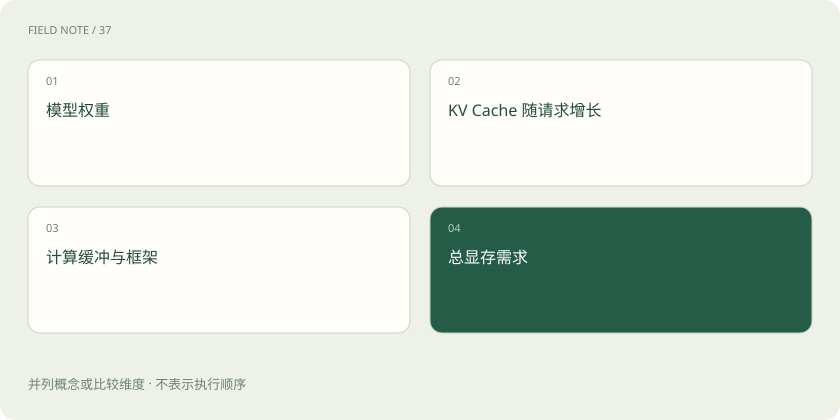

先用一个类比理解
显存像厨房台面：食材箱是权重，正在制作的订单是 KV Cache，锅具和操作空间也是必需的。只量食材箱大小，无法保证厨房运转。
类比只帮助建立直觉，不等同于技术的完整机制。
一图看懂

算得快和放得下是两件事
GPU 适合大规模并行数值计算，但服务性能还受显存带宽、通信、序列长度和调度影响。显存容量决定能否容纳当前模型与工作负载，不能只看算力宣传值。
用简单算术理解权重
纯教学估算：70 亿个参数每个使用 2 字节，权重约 140 亿字节，即十进制 14 GB。这里没有算 KV Cache、缓冲、额外尺度参数和框架，所以不是“14 GB 显卡可直接部署”的结论。
量化用精度和复杂度换资源
量化将部分数值表示为较低位宽，常可减少存储和带宽需求。收益依赖硬件、内核和格式，某些任务质量可能下降。FP16、BF16、INT8、4-bit 不是只改名字就可互换。
放进真实场景
SCENARIO
同一模型，短问答能运行，长文档加多人并发却显存不足，原因可能是 KV Cache 随序列长度和并发增大。
别踩这个误区
不要把模型下载文件大小、运行显存、显卡标称容量混为一谈；量化也不保证一定更快。
想一想
权重只有 14 GB，16 GB 显卡就一定够吗？
不一定，还必须计算运行时缓存、缓冲和工作负载。
关联阅读
资料与边界
以下是对应技术的官方文档或项目入口。本文为原创入门讲解，图示与场景经过简化；示例数字不代表实测或报价。整理日期：2026-11-04。工具功能与版本支持会变化，请以原始资料为准。